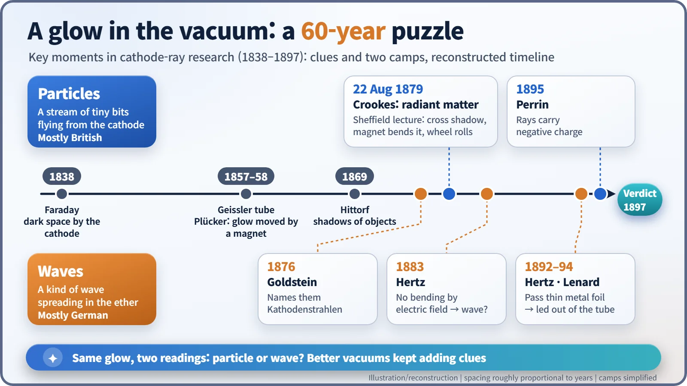
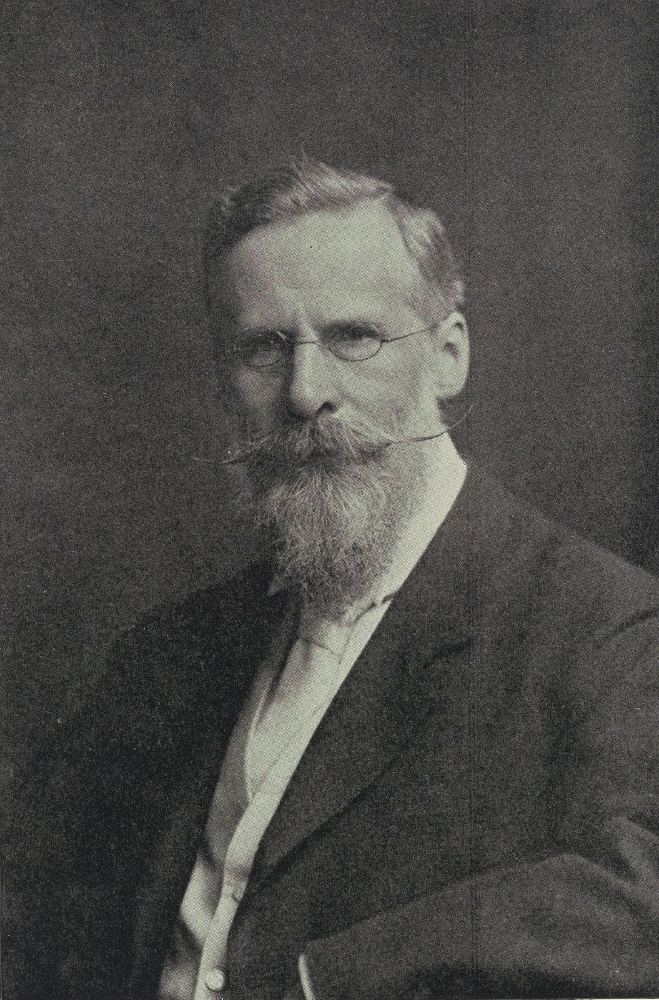
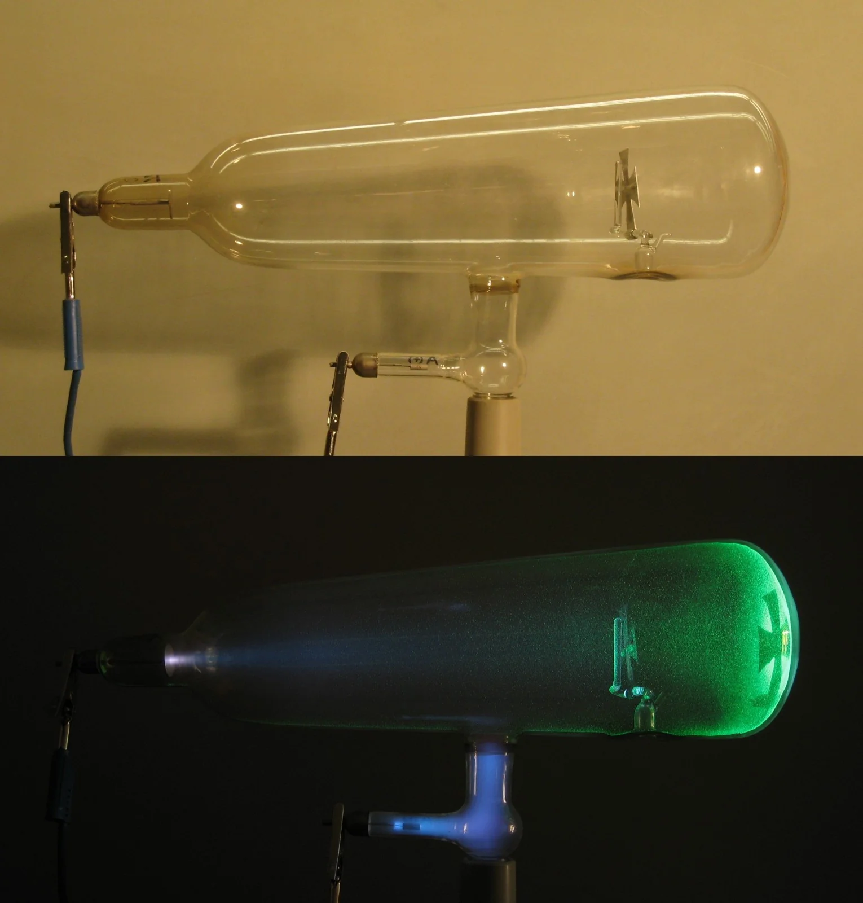
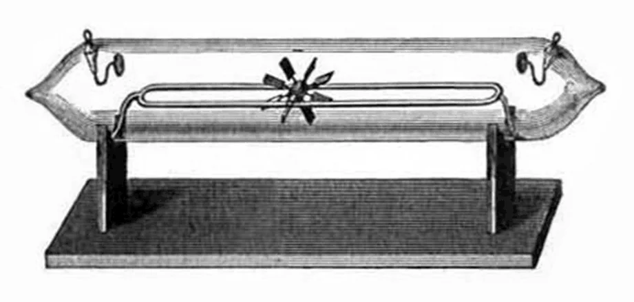
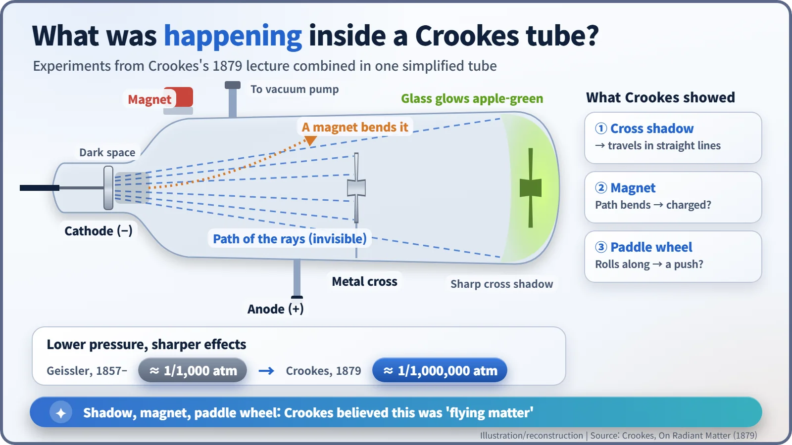

Nuclear History · 004
Particle or Wave? The Strange Glow in the Vacuum Tube — Sixty Years of Cathode Ray Research, from Faraday to the Crookes Tube
Better and better vacuum pumps revealed a beam that cast shadows, bent near magnets and turned tiny wheels, and split physicists into a particle camp and a wave camp.
For almost sixty years, from Faraday's glowing discharge tube in 1838 to the mid-1890s, physicists argued over a strange beam inside evacuated glass tubes: was it a stream of particles or a wave in the ether? Better pumps kept adding clues, from Hittorf's shadows to Crookes's famous 1879 lecture "On Radiant Matter," and the tools built along the way opened the road to X-rays and the electron. [1]
The bulge behind the old TV
Remember the old television sets with a big bulge at the back? Inside that bulge, a glass tube fired an invisible beam at the screen to make it glow. For almost sixty years in the nineteenth century, scientists argued over what that kind of beam actually was. They called it the cathode ray, and the door into the world inside the atom opened with this odd glow in a vacuum tube.
Pump out the air and the light changes
The story begins in 1838. Michael Faraday (1791–1867), the great pioneer of electricity, applied a high voltage across metal electrodes sealed into a glass tube of thin, low-pressure gas. The gas glowed softly, except for one dark band sitting right in front of the cathode, the negative electrode. Today that region is still called the Faraday dark space. [4]
The next step came from Bonn, Germany. In 1857 the glassblower Heinrich Geißler (Geissler, 1814–1879) used an improved pump to bring the pressure inside his tubes down to roughly one-thousandth of an atmosphere. The result, the Geissler tube, glowed along its whole length, much like a neon sign. [5]
Julius Plücker (1801–1868) of the University of Bonn used these tubes for an important observation in the late 1850s. A green glow appeared on the glass wall near the cathode, and when he brought a magnet close, the glow moved. (Sources disagree on whether he published this in 1858 or 1859.) In 1869 his former student Johann Wilhelm Hittorf (1824–1914) showed that an object placed between the cathode and the glass wall threw a sharp shadow on the wall. Something was leaving the cathode and travelling in straight lines. In 1876 Eugen Goldstein (1850–1930) in Berlin gave it a name: Kathodenstrahlen, or cathode rays. There was no single discoverer; several people each added one step, and some historians regard Hittorf as the effective discoverer. [4]

A magic show in Sheffield: the Crookes tube
In Britain, the chemist and physicist William Crookes (1832–1919), already known for discovering thallium in 1861 and inventing the radiometer in 1873, pushed the research to its limit. During the 1870s he built tubes pumped down much further: the Crookes tubes. Crookes himself described the best vacuum for his experiments this way: "Roughly speaking it may be put at the millionth of an atmosphere." At that pressure the gas barely glows at all; instead, the glass opposite the cathode lights up. In his words, the "soft German glass" phosphoresced "of a bright apple-green." [1]

On Friday 22 August 1879, at the annual meeting of the British Association for the Advancement of Science in Sheffield, Crookes gave a lecture called "On Radiant Matter." What he showed the audience was close to a magic show:
- Shadow. Stand a cross cut from aluminium sheet inside the tube, and a crisp cross-shaped shadow appeared on the green glass: "where solid matter intervenes they are obstructed by it, and a shadow is thrown on the screen."
- Magnet. Hold a magnet near the tube, and the glowing line "becomes curved under the magnetic influence," like a thrown ball bending under gravity.
- Paddle wheel. A tiny wheel with mica vanes, resting on "a little glass railway," rolled along when the rays struck it.
He also noted that "the glass gets very warm where the green phosphorescence is strongest"; focused, the rays could even melt metal. [1] [2]


Crookes's conclusion was bold. This was matter in a state different from solid, liquid or gas: "we are led to assume that we are here brought face to face with matter in a fourth state or condition." He pictured a stream of gas molecules shot out from the cathode, and he quoted Faraday, who back in 1816 had sorted matter into four states, "solid, liquid, gaseous, and radiant." He explained the dark space as "the mean free path of the molecules of the residual gas," an interpretation modern physics does not share. The lecture closed with a famous line: "We have actually touched the border-land where matter and force seem to merge into one another." [1] [2]
Two cautions. First, Crookes's "fourth state" is not the same thing as what we call plasma today; the word plasma was introduced only in 1928, by Irving Langmuir, and it describes something different. Second, J. J. Thomson and others later concluded that the paddle wheel turned mainly because of heating, the radiometer effect, rather than the momentum of flying particles. [5]

Germany's answer: "It's a wave"
Across the North Sea, many saw it differently. Goldstein and other German physicists generally regarded cathode rays as a kind of wave spreading through space, or through the "ether," as it was called then, much like light. In 1883 the young Heinrich Hertz (1857–1894) sent cathode rays between metal plates carrying an electric field. The beam did not bend. Charged particles should have been deflected, so the result seemed to favour the wave picture. In 1892 Hertz showed that cathode rays could pass through thin metal foil, which was also taken as evidence for waves, and around 1893–94 Philipp Lenard led the rays out of the tube into the open air through a thin aluminium window. (Lenard would receive the 1905 Nobel Prize in Physics for his cathode ray work.) [4] [6]
As it turned out, Hertz's tube did not have a good enough vacuum. The leftover gas conducted electricity and screened out the electric field, a point Thomson explained in 1897. In a sense, the debate was also a contest over who could pump a tube emptiest. The usual summary, "Britain for particles, Germany for waves," is a simplification; at heart it was ether waves against material particles. In 1895 the French physicist Jean Perrin (1870–1942) caught cathode rays in a small metal collector and showed that they carry negative charge, and the balance began to tip toward particles. [3] [4]
What the vacuum tube left behind
What cathode ray research left behind was less an answer than a toolkit: high-vacuum techniques, fluorescent screens and ways of steering a beam. In the autumn of 1895, a German professor experimenting with just such a discharge tube wrapped in black card would notice a mysterious glow that had passed right through the card, and two years later, in Cambridge, England, the long argument over the identity of cathode rays would finally be settled. Meanwhile, the beam-handling tricks of the Crookes tube fed into the cathode ray tube that Ferdinand Braun built in 1897, the ancestor of that bulging television set. [5]
Timeline
| Year | Event |
|---|---|
| 1838 | Faraday notices a dark region in front of the cathode in a low-pressure discharge |
| 1857 | Geissler builds his glowing tubes with an improved pump |
| Late 1850s | Plücker sees the green glow move under a magnet (published 1858 or 1859) |
| 1869 | Hittorf shows the rays cast shadows |
| 1876 | Goldstein names them cathode rays |
| 22 August 1879 | Crookes lectures "On Radiant Matter" in Sheffield |
| 1883 | Hertz fails to bend the rays with an electric field |
| 1892 | Hertz sends the rays through thin metal foil |
| 1895 | Perrin shows the rays carry negative charge |